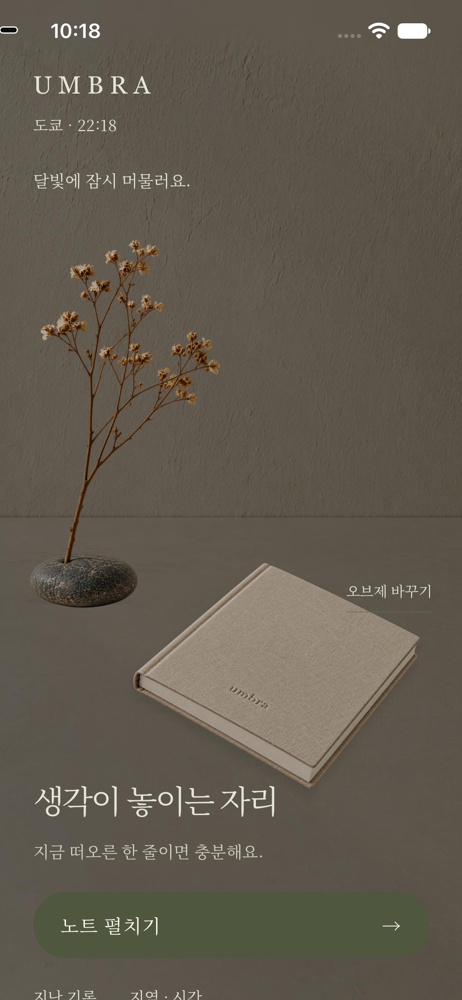

내가 고른 곳의 빛
세계 도시와 시간대를 고르거나 좌표를 직접 입력하세요. 시간에 따라 변하는 빛과 그림자가 나의 공간에 스며듭니다.
지역마다 다른 빛과 익숙한 오브제.
지금의 한 줄을 남기고, 그때의 공간을
다시 펼치는 개인 아카이브, Umbra.
개발 중인 서비스 · 공개 다운로드 준비 중

세계 도시와 시간대를 고르거나 좌표를 직접 입력하세요. 시간에 따라 변하는 빛과 그림자가 나의 공간에 스며듭니다.
가지, 선인장, 돌멩이 중에서 선택하거나 개인 사진을 등록하세요. 좋아하는 오브제와 함께 생각을 남깁니다.
지난 기록을 검색하고 수정하세요. 기록 당시의 빛과 오브제를 함께 살펴보며 그 순간으로 돌아갑니다.
기록을 재촉하는 점수도, 연속 기록의 부담도 없이.
나의 속도로 노트를 펼쳐보세요.
개발 및 테스트 단계입니다. 공개 App Store 다운로드와 TestFlight 초대 링크는 아직 안내하지 않습니다.
모바일 환경을 검증하고 있습니다. Google Play 공개 다운로드는 준비 중입니다.
현재 개발 중인 journal의 코드와 문서를 확인할 수 있습니다.
개발 저장소 보기 ↗도시를 선택하거나 좌표를 직접 입력할 수 있습니다. 현재 위치 사용은 사용자가 선택할 때 권한을 요청합니다.
현재 journal은 사용하는 환경의 로컬 저장소에 기록·설정·사진을 보관합니다. 기기를 옮기거나 데이터를 지우기 전에 백업을 내보내세요. 자세한 범위는 개인정보 처리 안내를 참고하세요.
휴지통의 기록은 복원할 수 있습니다. 영구 삭제한 기록은 앱에서 되돌릴 수 없으며, 예전 백업을 가져오면 그 백업에 있던 기록이 다시 추가될 수 있습니다.
현재는 빛·오브제·텍스트 기록에 집중합니다. 음악, 감정 기능과 자동 배경 분리는 제공하지 않습니다.
기기와 앱 버전, 문제가 발생한 순서를 알려주세요. 개인 기록이나 사진을 담은 백업 원본은 보내지 마세요.
지원 안내 보기 →